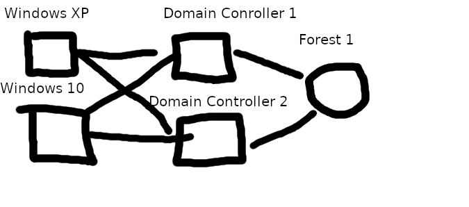

Active Directory is used in most corporate environments you will come across. Domains can usually span quite a large area and contain many computers and forests. This can mean it can be a bit overwhelming trying to get an idea of what the topology of the Domain looks like. Thankfully, there is a tool built for exactly this. Bloodhound is a tool which can be used to enumerate domain trusts and account privileges, and give a graphical overview of what the domain looks like and paths to domain admin.
The basic topology of my network I built looks like this:  I have one forest with two domain controllers and two computers connected to the domain. To give a bit more complexity, I have some users who are members of domain accounts and some that are memebers of groups which are parts of other groups.